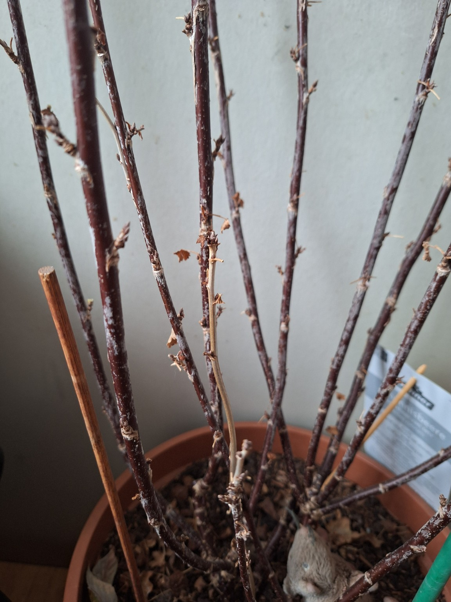
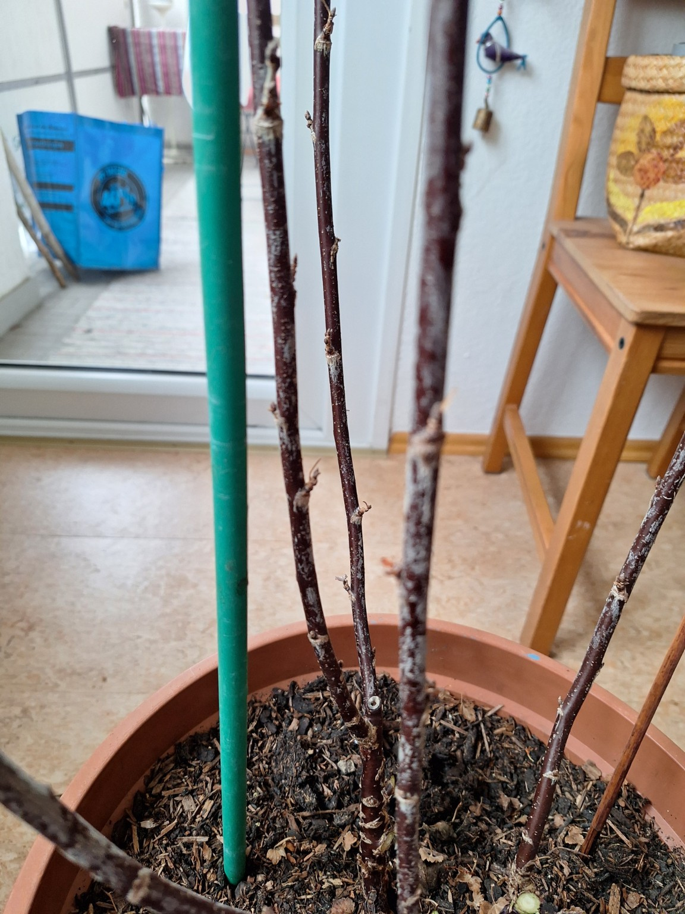

Redcurrant (Jonkheer van Tets) — pruned and ready
The plant is still in dormancy, buds are plump, and the framework is healthy. This is the ideal timing window for shaping in a container: fewer canes, better fruit quality.


What I did: selected and kept six main canes for a clean, airy structure; removed weak/crowded growth; kept the short 5–10 cm side shoots intact (they’re productive on redcurrant).
Next steps: leave it alone now: bright, cool, and only minimal watering. Start a gentle, organic feed once leaf-out is clearly underway. After harvest, consider removing one of the oldest canes at the base to keep the plant young and productive.
Container logic: remove wood rather than “topping” it. Short side shoots are assets, not clutter.